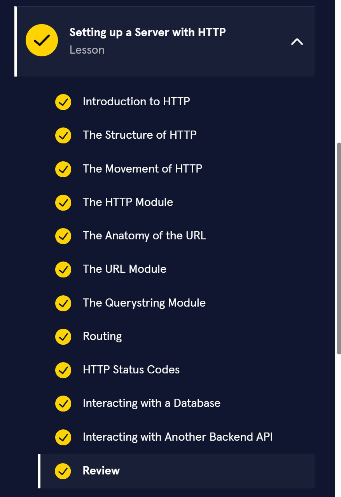

Codecademy Record 07
Learn Node.js: Setting Up a Server
Setting up a Server with HTTP
HTTP is an extremely powerful tool that serves as one of the communication foundations of the modern web. It allows for communication between two entities over common transport protocols.
By leveraging this robust communication ability, HTTP can be used to develop complex application architectures over networks, allowing servers to communicate with other servers, databases, and much more. Combining this with Node.js core modules such as http, url, and querystring, it has never been easier to build a complex application on the web.
复习清单cheatsheet：
Learn Node.js: Setting Up a Server: Setting up a Server with HTTP Cheatsheet | Codecademy
